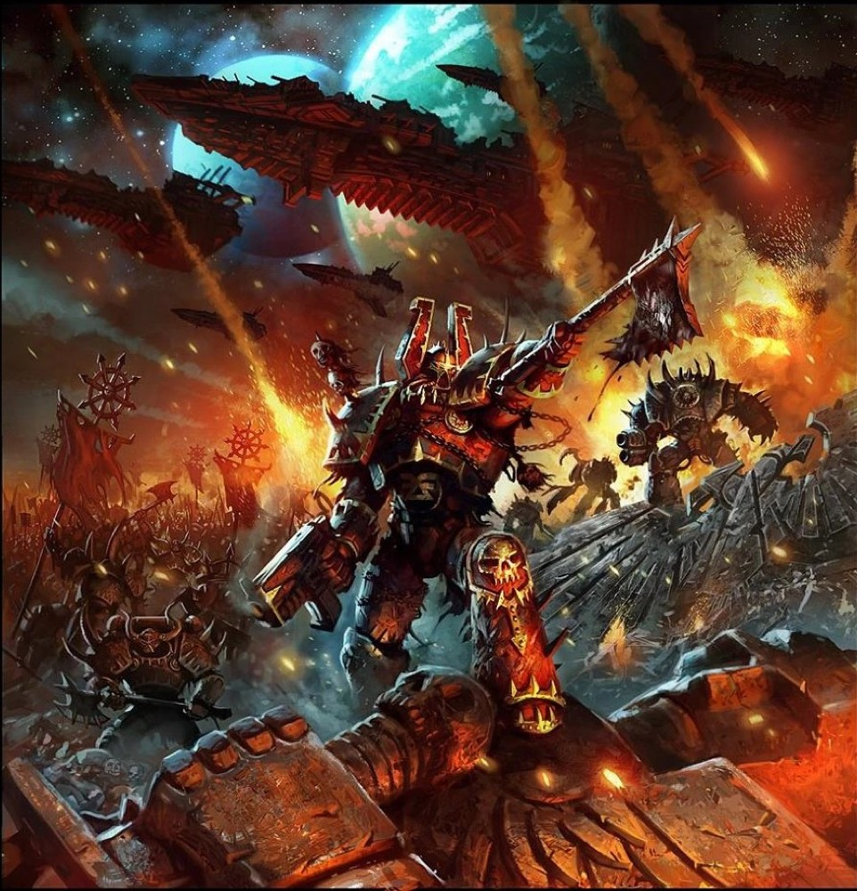
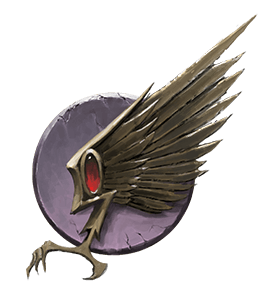
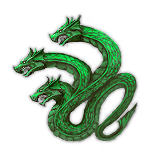

Long War
| Long War Bellum Longum | |
|---|---|
| Part of the Horus Heresy aftermath and the Era Indomitus | |
 Abaddon the Despoiler leads the Black Legion during the Thirteenth Black Crusade, shown in a pict-capture of the Cadian Gate Artwork © Games Workshop | |
| Date | c. 014.M31 to the present (the Long War is ten thousand years old)[a] |
| Location | The Eye of Terror, the Maelstrom, the Cadian Gate, and the Imperium of Mankind in general; in the Era Indomitus, the Imperium Nihilus |
| Result | Unresolved. The Traitors have won and lost worlds on every front; the Imperium holds its core and has lost the Cadian Gate to the Great Rift |
| Belligerents | |
| Imperium | Traitor forces  Emperor's Children Alpha Legion |
| Commanders and leaders | |
| † Killed in action | |
| Strength | |
| Casualties and losses | |
| Cadia and the Cadian Gate lost in 999.M41; the Imperium split by the Great Rift; worlds lost in every Segmentum over ten thousand years | The Sons of the Eye destroyed at Arkreach; Tallomin's assault repelled at the Cadian Gate; several Legions destroyed or split in the Legion Wars |
The Long War, also called the Eternal War, is the name the Traitor Legions and their successors give to their struggle against the Emperor of Mankind and the Imperium of Mankind. It began when the surviving Traitor Legions retreated into the Eye of Terror after the death of the Warmaster Horus at the Siege of Terra in 014.M31. It has continued for ten thousand years. Its aim is the victory that Horus was denied at the end of the Horus Heresy, and its campaigns have been fought from the Eye, the Maelstrom and the Gate to Cadia, and most recently from the Imperium Nihilus.[1]
The Long War was not one campaign. It was a series of invasions, feuds between the Traitor Legions, long raids and quiet subversion, and it has been fought in every Segmentum at different times. The most visible parts are the thirteen Black Crusades, the great invasions that Abaddon the Despoiler launched from the Eye between 781.M31 and 999.M41. Imperial scholars also count the Legion Wars inside the Eye, the raids of warbands, the attacks of daemon primarchs and the Chaos Gods' own contests for the galaxy. Imperial records treat all of these as one war, since their leaders, their weapons and their stated enemy have not changed.[2]
The fall of Cadia at the end of the Thirteenth Black Crusade in 999.M41 is the event that has changed the war most. It destroyed the Cadian Gate and opened the Great Rift. For the first time since the Heresy, Traitor forces held Imperial space outside the Eye on a lasting basis. The Era Indomitus that followed has seen the Imperium split in two, the return of several daemon primarchs and the Plague Wars in Ultramar, all of which Imperial scholars now regard as part of the Long War.[3]
Background
[edit]The Heresy and the Eye
[edit]The Traitor Legions were the nine Space Marine Legions that followed Horus in the Heresy. They rebelled at Isstvan III in 005.M31 and lost the war at the Siege of Terra in 014.M31. When Horus died aboard the Vengeful Spirit, the remaining Traitor forces withdrew into the Eye of Terror, a permanent rift in the Warp in the north-west of the galaxy. Imperial records describe the retreat as a flight, but the Traitors took the retreat as a choice that let them regroup.[1]
The Emperor had already pronounced sentence on the Traitors. The judgement of Excommunicate Traitoris ordered that they be driven into the Eye and kept there. It also ordered that every trace of the Traitor Legions be erased from the Imperial archives, a command the Imperium has only partly carried out.[4]
The Great Scouring
[edit]The Imperium answered the Heresy with a seven-year campaign of reprisal called the Great Scouring, which ran from 014 to 021.M31. Loyalist forces drove the Traitors from Imperial space, cleansed Chaos-corrupted systems and placed them under the watch of the newly founded Inquisition. The Scouring was not clean. Many Legions and Chapters used the chance to settle old scores, and worlds that had tried to stay neutral in the Heresy were attacked by both sides.[4]
By the end of the Scouring the Traitor Legions were broken as organised armies. Their primarchs were either dead, exiled or fallen into the Warp, and the survivors had sanctuary only among the daemon worlds of the Eye. Imperial accounts state that the Scouring ended the Traitors' hold on the Imperium, but not their threat to it.[4]
The Legion Wars
[edit]Inside the Eye the Traitor Legions fought one another for dominance of the daemon worlds and the territory of the Warp. These conflicts are known as the Legion Wars. They lasted for many centuries and produced the warbands that later formed the core of the Chaos Space Marines. Some Legions were destroyed in these wars. Others split into rival factions, and a few lost their Legion identity altogether.[1]
Several primarchs did not survive the Legion Wars in their former form. Those who lived were changed by the Warp and became Daemon Primarchs, giving up day-to-day control of their Legions. Imperial scholars regard the Legion Wars as the period in which the Traitor Legions became the Chaos Space Marines of later records.[1]
The Black Crusades
[edit]The first twelve
[edit]The first Black Crusade was launched in 781.M31, when Abaddon attacked the Cadian Gate and the Segmentum Obscurus. It is also called the First Battle of Cadia. The campaign failed, but it gave Abaddon the standing to lead the Traitors. Imperial accounts record that he recovered the daemon sword Drach'nyen on the world of Uralan in the same period, and that his authority over the Traitor Legions grew after that.[2]
The Black Crusades that followed were of different sizes and aims. The second, in 597.M32, struck the shipyards of the Belis Corona Sector and destroyed dozens of cruisers under construction. The third, in 909.M32, sent the Daemon Prince Tallomin against the Cadian Gate, and it was repelled by the Space Wolves. In the same campaign Abaddon's strike force desecrated the Shrine World of Gerstahl, an act that Imperial scholars link to the Despoiler's fear of a living saint. The fourth, the El'Phanor War of 001.M34, saw the Black Legion break the citadel of Kromarch.[2]
The middle crusades ranged further. The fifth, in 723.M36, struck the Elysia Sector. The sixth, in 901.M36, attacked the Forge World of Arkreach and destroyed a splinter warband, the Sons of the Eye. The seventh, in 811.M37, opened a long period of raids and false trails called the Ghost War. The eighth, in 999.M37, was a ritual campaign dedicated to Tzeentch. The ninth, in 537.M38, destroyed the monarch hive of Antecanis. The tenth, in 001.M39, was carried out with Perturabo and failed to take Medusa. The eleventh, in 301.M39, was a navigational error that placed the fleet in the path of an Ork Waaagh!.[2]
The twelfth, in 139.M41, attacked the Gothic Sector and the Blackstone Fortresses. Abaddon seized two of the fortresses before the Gothic War ended in 160.M41, and he is believed to have escaped with them into the Warp. The Imperium counts the twelfth as a victory, though it was a costly one.[2]
The Thirteenth Black Crusade
[edit]The thirteenth was launched in 999.M41 against the Cadian Gate, the one stable route out of the Eye into the Imperium. It was the largest of the Black Crusades. Its main force was the Black Legion, which had become Abaddon's personal command, and it was joined by the warbands of the Death Guard, the Emperor's Children, the Word Bearers and others. Imperial records describe the defence of Cadia as long and bitter, and the Cadian garrison fought in every system of the Gate.[5]
The Imperium lost Cadia in 999.M41. The fortress world's pylons, which had held the Eye in check for millennia, were destroyed, and the Great Rift opened across the galaxy. The Imperium was cut in two, and contact was lost with many of its Chapters. Imperial officers note that the Traitor fleets were able to move freely after this, since the Warp storms of the Rift had weakened the Imperium's ability to hold its borders. Abaddon's victory is recorded as the first time since the Heresy that Traitor forces had taken and held Imperial space outside the Eye.[3]
Chaos warbands and the wider war
[edit]Between the great crusades the Long War has been fought by smaller forces. Traitor warbands raid border worlds, corrupt planetary governments and summon daemons into Imperial space. Many of these warbands are made up of Renegades, who were once Imperial soldiers or Adeptus Astartes and who were drawn to Chaos by its promises. Their numbers rise and fall with the strength of the Warp storms around them.[1]
The Traitor Legions remain divided. The Black Legion follows Abaddon, but other warbands serve the Chaos Gods or their own ambitions. Imperial records state that the daemon primarchs, who are no longer directly commanding their Legions, have their own agendas, and that Abaddon is the only figure who has kept the Traitors working towards the goal of the Long War.[1]
The Era Indomitus
[edit]The Rift and the Imperium Nihilus
[edit]The opening of the Great Rift in 999.M41 began the Era Indomitus. The Imperium Nihilus, the half of the Imperium cut off from Terra by the Rift, has been ruled since then by the Regent Commander Dante. The Imperium Sanctus, the half that holds Terra, has been ruled by Roboute Guilliman, who was resurrected on Macragge in the same year and returned to Terra through the Webway. Imperial records treat these two events as the start of the Indomitus Crusade.[3]
The Traitors were quick to act. Their warbands expanded through the Rift, the Ruinstorm-scarred systems and the Maelstrom, and they struck at the Imperium Nihilus as well as the Imperium Sanctus. The Rift also brought new enemies, including Hive Fleet Hydra, which entered the galaxy from the south in the wake of the Rift.[3]
The Plague Wars
[edit]The Plague Wars were the first major campaign of the Era Indomitus. They were fought by Mortarion, the Daemon Primarch of the Death Guard, who invaded Ultramar on behalf of Nurgle. The campaign was fought across Ultramar and ended with the meeting of Mortarion and Guilliman at Iax in c. 012.M42. Imperial records disagree on the length of the first phase. The Lord Commander's own revised records give the date of the Plague Wars as c. 000–012.M42.[c][3]
The Plague Wars ended the first phase of the Indomitus Crusade. The Battle of Raukos, which defeated a Traitor alliance of the Word Bearers and Iron Warriors, took place in the same year.[3]
The Arks of Omen and the daemon primarchs
[edit]From 001.M42 Abaddon and the daemon Vashtorr the Arkifane hunted the fragments of the Key in the Imperium Nihilus, in the campaign that became the Arks of Omen. The campaign ended at the battle of Wyrmwood, where Vashtorr completed the Key, and it produced the greatest concentration of Traitor power seen since the Heresy.[3]
In the early 42nd millennium several of the daemon primarchs returned to the galaxy. The Lion returned to the Imperium Nihilus, Angron returned and destroyed the Choral Engine of Malakbael, and Fulgrim began a crusade of conquest that ended with the seizure of Crucible. Perturabo opened the Infinite Citadel near the Cadian Gate, and Magnus the Red raised the Prosperan Rift. Imperial scholars regard these returns as proof that the Long War has not ended, and that the Chaos Gods are using the Rift to move their champions freely.[3]
Current state
[edit]As of M42 the Long War is fought on several fronts at once. In the Imperium Sanctus, Traitor warbands raid the Segmentum Obscurus and the worlds around the Cadian Gate, while the Imperium Sanctus's Chapters defend what remains of the Imperium's core. In the Imperium Nihilus, Abaddon's Black Legion continues to build its strength in the Rift, and the daemon primarchs hold worlds and fleets of their own. Each side has lost worlds in the last thousand years and each has gained some.[3]
The Imperium's official position is that the Long War is a conflict to be won, not a war of attrition. Imperial officers hold that the defences built after Cadia have slowed the Traitors, and that the Traitors' internal divisions will eventually undo them. The Traitors hold the opposite view and state that the Long War is nearly over. Neither side has offered terms.[2]
Timeline
[edit]| Date | Event | Place |
|---|---|---|
| 005.M31 | The rebellion is declared at Isstvan III | Isstvan III |
| 014.M31 | Horus is slain aboard the Vengeful Spirit at the Siege of Terra | Terra, Sol System |
| c. 015.M31 | The surviving Traitor Legions retreat into the Eye of Terror[d] | Eye of Terror |
| 014–021.M31 | The Great Scouring drives the Traitors from Imperial space | Imperial space |
| c. 021.M31 | The Second Founding and the end of the Scouring | Terra |
| c. 021–c. 100.M31 | The Legion Wars begin inside the Eye; the Legions break into warbands[e] | Eye of Terror |
| 781.M31 | The first Black Crusade is launched against the Cadian Gate | Segmentum Obscurus |
| 597.M32 | The second Black Crusade strikes the shipyards of the Belis Corona Sector | Belis Corona |
| 909.M32 | The third Black Crusade is repelled by the Space Wolves | Cadian Gate |
| c. 400.M32 | Perturabo turns the plague of Nurgle on the forge world Toil | Toil |
| 001.M34 | The fourth Black Crusade, the El'Phanor War, breaks the citadel of Kromarch | El'Phanor |
| 764.M34 | The Shattering of the Craftworld Lugganath | Lugganath |
| 723.M36 | The fifth Black Crusade attacks the Elysia Sector | Elysia Sector |
| 901.M36 | The sixth Black Crusade attacks the Forge World of Arkreach | Arkreach |
| 811.M37 | The seventh Black Crusade begins the Ghost War | Segmentum Obscurus |
| 999.M37 | The eighth Black Crusade, a ritual campaign for Tzeentch | Segmentum Obscurus |
| 537.M38 | The ninth Black Crusade destroys the monarch hive of Antecanis | Antecanis |
| 001.M39 | The tenth Black Crusade fails at Medusa | Scarus Sector |
| 301.M39 | The eleventh Black Crusade is drawn into an Ork Waaagh! | Cardinal World of Relorria |
| 139.M41 | The twelfth Black Crusade seizes two Blackstone Fortresses | Gothic Sector |
| 160.M41 | The Gothic War ends | Gothic Sector |
| 999.M41 | The thirteenth Black Crusade breaks the Cadian Gate; Cadia falls | Cadia |
| 999.M41 | The Great Rift opens and divides the Imperium | Galaxy-wide |
| 999.M41 | Roboute Guilliman is resurrected on Macragge | Ultramar |
| 000–012.M42 | The Plague Wars are fought in Ultramar | Ultramar |
| c. 012.M42 | Guilliman and Mortarion meet at Iax; the first phase of the Indomitus Crusade ends | Iax |
| 001.M42 | The Arks of Omen are launched; Vashtorr completes the Key at Wyrmwood | Imperium Nihilus |
| Early M42 | The Lion returns to the Imperium Nihilus | Imperium Nihilus |
| Early M42 | Angron returns and the Choral Engine of Malakbael is destroyed | Imperium Nihilus |
| Early M42 | Perturabo opens the Infinite Citadel near the Cadian Gate | Cadian Gate |
| Early M42 | Magnus the Red raises the Prosperan Rift | Prospero |
| M42 | The Long War continues on every front; the Black Legion builds its strength in the Rift | Galaxy-wide |
See also
[edit]- Traitor Legions
- Black Crusade
- List of Black Crusades
- Thirteenth Black Crusade
- Legion Wars
- Chaos Space Marines
- Era Indomitus
Notes
[edit]- ^ Estimated; no record gives an exact year for the first retreat into the Eye of Terror.
- ^ Imperial estimates only; the Administratum did not count the Traitor host directly.
- ^ Estimated from the surviving accounts; the revised Lord Commander's records and the Ultramar annals disagree on the dates of the first phase.
- ^ Estimated; no record gives an exact year.
- ^ Estimated from the sequence of events.
References
[edit]- ^ a b c d e f Dembski-Bowden, Aaron. Blood Reaver (novel). Black Library, pg. 257.
- ^ a b c d e f Codex: Chaos Space Marines (6th Edition), pp. 3, 5, 13, 22-25, 30, 32. Games Workshop.
- ^ a b c d e f g h i Codex: Chaos Space Marines (4th Edition), pg. 17. Games Workshop.
- ^ a b c Black Crusade: The Tome of Blood (RPG), pp. 21-22.
- ^ Black Crusade: The Tome of Decay (RPG), pg. 21.